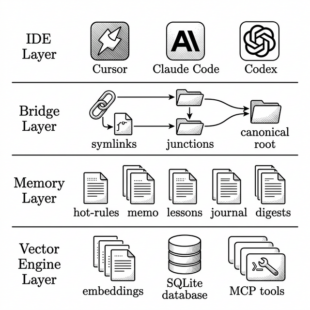
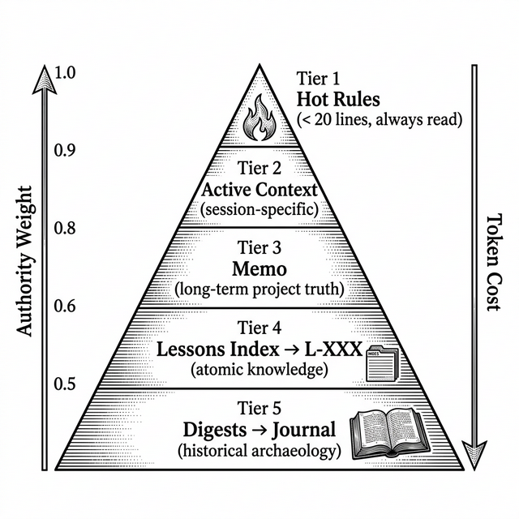
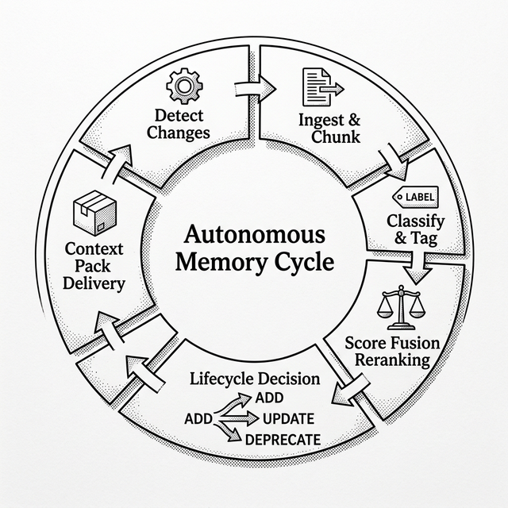
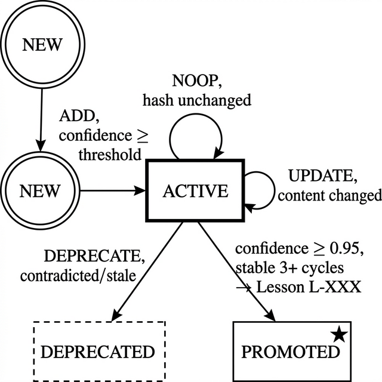
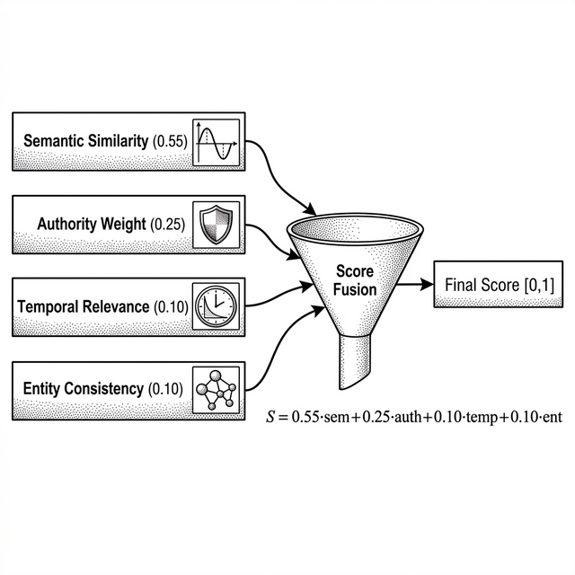
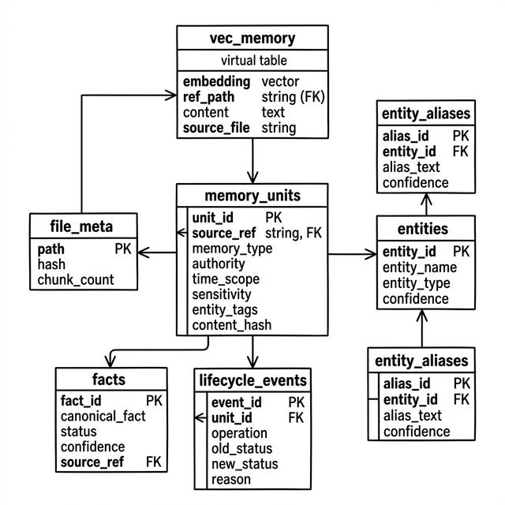

Open-Source Software · GitHub: DiNaSoR/Mnemo
March 2026 · Version 0.0.8
Large Language Model (LLM)–based coding agents suffer from stateless execution: each session begins with no
recollection of prior decisions, discovered bugs, or architectural constraints. Existing IDE-specific memory
mechanisms—rule files, scratch pads, conversation logs—are fragmented, unstructured, and consume token
budgets unpredictably. We present Mnemo, an open-source structured memory system designed
for AI coding agents that provides (i) a canonical, token-safe retrieval hierarchy with deterministic read
ordering, (ii) an autonomous runtime capable of no-human-in-the-loop memory lifecycle management including
fact ingestion, contradiction detection, entity resolution, and lesson promotion, (iii) a score-fusion
reranking engine combining semantic similarity, authority weight, temporal relevance, and entity
consistency, and (iv) multi-IDE compatibility through a bridge architecture supporting Cursor, Claude Code,
Gemini Antigravity, OpenAI Codex, Windsurf, and others. Mnemo installs via a single cross-platform Node.js
CLI (npx @dinasor/mnemo-cli) and scaffolds an always-read memory layer, atomic lessons,
monthly journals, and optional vector-backed semantic recall using MCP tools. We describe the system
architecture across 12 autonomy modules, 4 core installer modules, 8 feature modules, and a 7-table SQLite
schema with sqlite-vec for cosine-distance embedding search. Continuous integration includes
cross-platform smoke tests, idempotency verification, modularization guards, nightly retrieval-quality
benchmarks, and drift detection. Mnemo has been deployed across active development projects and demonstrates
measurable reduction in context-window waste and agent re-discovery overhead.
Keywords: AI coding agents, structured memory, autonomous lifecycle management, token-safe retrieval, vector search, score fusion, MCP tools, developer tooling, LLM context optimization
The emergence of LLM-powered coding agents—tools such as Cursor, Claude Code, GitHub Copilot, OpenAI Codex, and Windsurf—has fundamentally altered software development workflows. These agents can generate, refactor, and debug code with remarkable fluency. However, they share a critical limitation: statelessness. Each invocation begins with a blank slate; the agent possesses no durable memory of previous sessions, discovered constraints, or architectural decisions [1].
This statelessness produces several observable pathologies in practice:
Mnemo addresses these challenges through a principled, structured memory system that operates as a middleware layer between the developer's repository and the AI agent. Rather than requiring changes to agent architectures or IDE internals, Mnemo works by scaffolding a well-defined knowledge base within the project directory and exposing it through each IDE's native rule/memory loading mechanism.
The system's core design principles are:
.mnemo/) is accessible from any supported IDE through symlinks, junctions, or mirror
copies.
Modern LLMs operate within finite context windows—typically 8K to 200K tokens depending on the model. While architectural advances like Rotary Position Embeddings (RoPE) and sliding-window attention have expanded these limits, the practical cost of long-context inference remains high, both in latency and financial terms. Research has shown that retrieval quality degrades non-linearly as context length increases, a phenomenon characterized as the "lost in the middle" effect [2]. This makes judicious selection and ordering of retrieved content existentially important for agent performance.
Several IDE-integrated agent systems have introduced project-level memory files: Cursor supports
.cursor/rules/ with MDC rule files, Claude Code uses CLAUDE.md, and Antigravity
loads
from .agent/rules/. However, these mechanisms are proprietary, unstructured, and lack (i) a
canonical retrieval ordering, (ii) lifecycle management for stale knowledge, and (iii) inter-IDE
portability. A
project using multiple agents must maintain parallel memory files with no guarantee of consistency.
RAG systems [3] augment LLM generation by retrieving relevant documents from external stores at inference time. While effective for general knowledge retrieval, standard RAG pipelines are ill-suited for project memory because they typically lack (i) authority-weighted retrieval ordering, (ii) temporal decay for episodic content, (iii) entity-aware result boosting, and (iv) sensitivity/redaction enforcement. Mnemo's vector layer extends RAG principles with these domain-specific signals through a score-fusion reranking architecture.
The Model Context Protocol [4] provides a standardized interface for exposing tools and resources
to
LLM agents. Mnemo leverages MCP to register five semantic memory tools (vector_search,
vector_sync, vector_forget, vector_health,
memory_status)
that IDEs can invoke directly, enabling seamless integration without custom agent modifications.

Mnemo's architecture comprises four principal layers, as depicted in Figure 1:
Each supported IDE reads memory through its native mechanism: Cursor loads .cursor/rules/*.mdc
and
.cursor/memory/; Claude Code reads from .mnemo/memory/ following the index
retrieval
order; Antigravity loads .agent/rules/*.md; Codex and Windsurf use .mnemo/memory/
directly. No IDE-specific code modifications are required.
The bridge subsystem (bin/installer/core/bridge.js) creates and maintains permanent
compatibility
bridges between the canonical .mnemo/ root and IDE-specific directories. On platforms
supporting
symbolic links (macOS, Linux), directory symlinks are used. On Windows, NTFS junctions are preferred. When
neither is available, a file-level mirror copy is performed. All bridge operations are idempotent and
include
self-repair detection to handle corrupted or stale references.
The canonical memory root (.mnemo/memory/) contains the structured knowledge base organized by
content type: always-read files (hot-rules.md, active-context.md,
memo.md), atomic lessons (lessons/L-XXX-*.md), monthly journals
(journal/YYYY-MM.md), digests (digests/*.digest.md), architectural decision
records
(adr/), and templates. A memory index (index.md) specifies the deterministic read
order.
An optional semantic layer (mnemo_vector.py, 838 lines) provides embedding-based search over
memory
content. It supports dual embedding providers (OpenAI text-embedding-3-small and Google Gemini
text-embedding-004), implements incremental chunk-level synchronization, and exposes its
capabilities through five MCP tools. The vector engine uses sqlite-vec for cosine-distance
nearest-neighbor search with configurable embedding dimensions (default 1536).

Mnemo classifies all memory content into five semantic types, each with an assigned authority weight (α ∈ [0, 1]) and temporal scope:
| Memory Type | α | Temporal Scope | Content Source | Examples |
|---|---|---|---|---|
| Core | 1.0 | Atemporal | hot-rules.md, memo.md | Invariants, ownership maps, retrieval rules |
| Procedural | 0.9 | Atemporal | lessons/L-XXX-*.md | Bug fixes, design patterns, pitfalls |
| Semantic | 0.8 | Time-bound | digests/, adr/ | Architecture summaries, conceptual overviews |
| Episodic | 0.7 | Recency-sensitive | journal/, active-context.md | Daily work logs, session state |
| Vault | 0.0 | N/A | vault/ | Secrets, credentials (never retrieved) |
The retrieval hierarchy enforces a strict reading protocol, codified in index.md:
hot-rules.md → active-context.md →
memo.md. These files consume fewer than 100 lines total and provide the highest-signal
invariants.
lessons/index.md → specific L-XXX files →
digests/ → raw journal/ only for archaeology.
This two-tier protocol prevents the "load everything" anti-pattern. The always-read tier is bounded to
approximately 20 lines for hot-rules and constrained by memory lint checks that enforce token budgets. The
search tier uses either file-system keyword search (query-memory.ps1), SQLite FTS, or vector
semantic search to locate relevant content before loading it.
A critical invariant encoded in hot-rules.md defines the authority override chain:
Lessons override EVERYTHING (including active-context). Active-context overrides memo/journal (but NOT lessons). Memo is long-term project truth. Journal is history.
This hierarchy prevents the common failure mode where transient session context contradicts established lessons—a form of "memory hallucination" that occurs when recent, lower-authority content is prioritized over validated knowledge.

Mnemo's autonomous runtime (autonomy/) operates as a no-human-in-the-loop pipeline comprising 12
Python modules totaling approximately 2,400 lines. The runtime is triggered by Git hooks or a periodic
scheduler
(MNEMO_SCHEDULE_INTERVAL, default 300 seconds) and executes a single atomic memory cycle under
a
file lock with a 600-second stale-lock timeout.
Each autonomous cycle proceeds through six stages orchestrated by runner.py:
ingest_pipeline.py): Scans .mnemo/memory/
for
.md files whose SHA-256 content hash differs from the stored hash in
file_meta. A
configurable skip list excludes index files, README files, and template directories.
ingest_pipeline.py): Changed files are read,
classified by memory type (using path heuristics from common.py), and split into chunks
using
context-aware markdown splitting. Journal files split on ## YYYY-MM-DD date headers;
lessons
are treated as atomic units; general files split on heading boundaries. Each chunk is bounded to
MAX_CHUNK_CHARS = 10,000 characters.
entity_resolver.py): Named entities—file paths, module
names, concepts—are extracted via heuristic patterns (backtick-delimited code references, capitalized
terms,
path-like strings). Each entity is assigned a stable UUID through exact-match lookup, alias resolution,
or
fuzzy matching (token Jaccard with threshold 0.85). Entity confidence is reinforced on each observation
and
decays by 0.02 per cycle without reinforcement; entities below minimum confidence are quarantined.lifecycle_engine.py): Each memory unit passes through
a
state machine that emits one of four operations: ADD (new content), UPDATE
(changed content with existing unit), DEPRECATE (contradicted or stale facts), or
NOOP (unchanged hash). Contradiction detection uses token Jaccard similarity bounded to the
200
most recent active facts.
vault_policy.py): Every N cycles
(configurable, default 10), all memory units undergo bulk sensitivity reclassification against the
policy
rules defined in policies.yaml.runner.py): A summary of the cycle's actions—files
processed,
operations performed, entities resolved, facts deprecated—is appended as an autonomous journal entry.

The lifecycle engine implements a principled approach to knowledge durability. Key facts are extracted from
memory unit content using heuristic patterns (declarative sentences, rule statements, code patterns). Each
fact
is tracked in the facts table with a confidence score and status. The
PROMOTE_STABILITY_CYCLES = 3 parameter requires a fact to appear consistently across three
autonomous cycles before it qualifies for automatic promotion to a lesson file (L-XXX-*.md),
ensuring transient observations do not pollute the procedural knowledge base.

The reranking engine (reranker.py) implements a weighted linear score-fusion model that combines
four normalized signals into a final relevance score S ∈ [0, 1]:
With default weights: wsem = 0.55, wauth = 0.25, wtemp = 0.10, went = 0.10 (Σ = 1.0). Each signal is computed as follows:
Derived from cosine distance returned by sqlite-vec nearest-neighbor search:
ssemantic = max(0, 1 − dcosine). This signal dominates the fusion
(55%)
because vector similarity is the strongest indicator of topical relevance.
Looked up from the AUTHORITY_WEIGHTS table based on inferred memory type. Core memory
(hot-rules,
memo) receives maximum authority (1.0); vault content receives zero and is filtered entirely. This signal
(25%)
ensures that high-authority invariants are surfaced above lower-priority episodic content even when semantic
similarity is comparable.
Computed differently based on the unit's temporal scope. For atemporal content (core, procedural): a constant 0.8 (always moderately relevant). For recency-sensitive content (episodic): exponential decay with a half-life of 30 days: stemporal = exp(−0.693 · agedays / 30). Time-sensitive queries (containing keywords like "today", "recent", "latest") receive a 1.5× boost, capped at 1.0.
A binary bonus when the queried entity appears in the result's entity_tags. Direct name matches
score 1.0; alias matches score 0.8; no match scores 0.0. This signal resolves ambiguity when multiple
results
have comparable semantic scores but differ in entity relevance.
Each RankedResult object carries all four sub-scores alongside the final score, enabling
human-readable explanations via the explain() method for debugging retrieval quality.
The vector engine (mnemo_vector.py, 838 lines) serves as both an MCP server and a standalone CLI
tool, implemented using the FastMCP framework. It supports five operations:
| MCP Tool | Function | Description |
|---|---|---|
vector_sync |
Incremental sync | Detects changed files, chunks content, generates embeddings, upserts into
vec_memory.
Skips unchanged chunks within changed files for sub-file granularity. |
vector_search |
Semantic search | KNN search with authority-aware reranking. Accepts optional memory_type filter.
Input
validated, retried with exponential backoff on API errors. |
vector_forget |
Selective deletion | Removes vectors matching a path pattern (LIKE-escaped). Empty pattern clears entire index. |
vector_health |
Health check | Reports provider, schema version, total chunks, files tracked, DB size, and memory root path. |
memory_status |
Detailed status | JSON summary including per-type memory unit counts, entity statistics, lifecycle event counts, and autonomy state. |
The engine implements an abstract _EmbedProvider base class with two concrete implementations:
_GeminiProvider (using google.genai) and _OpenAIProvider (using the
openai package). Provider selection is resolved at runtime through a cascade:
MNEMO_PROVIDER environment variable → presence of GEMINI_API_KEY → fallback to
OpenAI.
A sliding-window rate limiter (60 calls per 60 seconds) prevents API quota exhaustion during bulk sync
operations.
All module state is lazily initialized through a _LazyState singleton that defers file I/O,
environment variable resolution, and project .env loading until first access. This design
ensures
zero import-time side effects and enables the module to be safely imported in environments where API keys
may
not yet be configured.

The vector database (mnemo_vector.sqlite) uses SQLite with the sqlite-vec extension
for
vector operations. Schema v2 (schema.py) defines seven tables with automatic migration from v1:
| Table | Purpose | Key Columns |
|---|---|---|
vec_memory |
Virtual vector table (cosine distance) | embedding[1536], ref_path, content, source_file |
memory_units |
Typed memory unit catalog | unit_id PK, source_ref, memory_type, authority, time_scope, sensitivity, entity_tags, content_hash |
facts |
Canonical fact tracking | fact_id PK, canonical_fact, status, confidence, source_ref |
lifecycle_events |
Audit trail for lifecycle operations | event_id PK, unit_id FK, operation (ADD|UPDATE|DEPRECATE|NOOP), reason |
entities |
Stable entity registry | entity_id PK, entity_name, entity_type, confidence |
entity_aliases |
Alias → entity mapping | alias_id PK, entity_id FK, alias_text UNIQUE, confidence |
file_meta |
File hash tracking for change detection | path PK, hash, chunk_count |
Database configuration uses WAL journaling (PRAGMA journal_mode=WAL) for concurrent read access,
a
10-second busy timeout, and foreign key enforcement. The embedding dimension is configurable via
MNEMO_EMBED_DIM (default 1536 for OpenAI, adjustable for Gemini's 768-dimensional embeddings).
The installer is a modular Node.js system (bin/installer/) that replaced the original
dual-platform
shell scripts (memory.ps1, memory_mac.sh) in v0.0.8. It comprises 4 core modules
and 8
feature modules orchestrated by index.js:
| Module | Responsibility |
|---|---|
paths.js |
Builds a complete path context object mapping all target directories (memory, rules, bridges, scripts, hooks) |
writer.js |
Atomic file writer supporting --force and --dry-run flags with
idempotent
SKIP/WROTE reporting |
template.js |
Mustache-style {{VAR}} template engine for rendering content and rule templates
with
project-specific variables |
bridge.js |
Cross-platform bridge manager with symlink/junction/mirror fallback and self-repair |
Eight feature modules execute in sequence: legacyMigration → scaffold →
rules → helperScripts → vectorSetup → mcpConfig →
gitHooks → gitignore → bridges. Each module receives a shared context
object (ctx) and options (opts), ensuring consistent path resolution and flag
handling
across the pipeline.
The entry point (bin/mnemo.js, 521 lines) provides an interactive ANSI-styled wizard that guides
users through vector mode enablement, provider selection, API key configuration, and dependency preflight
checks. Non-interactive operation is supported via --yes for CI/scripting environments. 19
content
templates under scripts/memory/installer/templates/ are rendered at install time.
Mnemo implements a three-tier sensitivity classification system (vault_policy.py) driven by
declarative YAML policies:
| Sensitivity | Behavior | Matching Patterns |
|---|---|---|
| Secret | Never retrieved, never included in context packs, always redacted | .env, vault/, *.secret.*, *credentials*,
*private-key*
|
| Internal | Accessible to agent/autonomous roles only, redacted for external | active-context.md |
| Public | Fully accessible, no redaction | All other content |
The redaction system applies built-in regex patterns for common secret formats (API keys, bearer tokens, long
random strings) supplemented by project-specific patterns from policies.yaml. Redaction
replaces
matched content with a [REDACTED] placeholder. The VaultPolicy class provides
classify_and_persist() for individual units and bulk_reclassify() for periodic
sweeps.
An audit report method detects potential sensitivity leaks—units classified as secret that reside
outside vault directories.
The ContextSafetyGuard (context_safety.py) applies five checks before any retrieval
results are delivered to an agent:
DEFAULT_TOKEN_BUDGET = 6,000 characters (~1,500 tokens).
Mnemo maintains four CI/CD workflows on GitHub Actions providing comprehensive coverage:
ci.yml)Triggered on every push and pull request to main. Comprises 7 parallel jobs:
--force produces only SKIPs), force overwrite check, dry-run validation, path-with-spaces
test.
--help exits 0, --yes --dry-run
succeeds, full install produces core files.benchmark_runner.py against fixtures, reports retrieval metrics.
py_compile all Python modules (autonomy templates,
vector engine, test scripts).nightly-memory-bench.yml)Runs at 2 AM UTC daily. Extends the CI benchmark with baseline caching and drift detection: current metrics are compared against the persisted baseline, and regressions optionally fail the run. A modularization check tracks LOC trends and generates module file inventories.
policies.yaml)Benchmark thresholds are codified in the same policy file used by the runtime:
min_hit_at_3: 0.70 — at least 70% of test queries must return a relevant result in top-3.
min_ndcg_at_5: 0.65 — normalized discounted cumulative gain at 5 must exceed 0.65.max_p95_latency_ms: 2,000 — 95th percentile retrieval latency must stay under 2 seconds.
max_token_cost_per_query: 0.005 — embedding API cost per query must not exceed $0.005.A PR checks workflow (pr-checks.yml) runs ShellCheck as a blocking gate. The release workflow
(release.yml) performs preflight validation (version consistency, changelog completeness), npm
package publishing, and GitHub release creation with packaged installer assets.
File-based vs. database-first storage. Mnemo deliberately uses markdown files as the canonical storage format rather than a database-first approach. This decision prioritizes human readability, Git difftreeability, and IDE compatibility—agents can read memory files directly without requiring database drivers. The SQLite database serves as an acceleration layer for vector search and lifecycle tracking, not as the source of truth.
Heuristic vs. learned classifiers. Memory type classification, entity extraction, and contradiction detection use heuristic pattern matching rather than neural classifiers. While this limits recall compared to learned models, it ensures: (i) zero-latency classification without API calls, (ii) deterministic behavior for reproducibility, and (iii) no additional model dependencies. The heuristic approach is validated through the nightly benchmark pipeline.
Linear score fusion. The weighted linear model was chosen over more sophisticated reranking
approaches (cross-encoders, learned-to-rank models) for the same reasons: determinism, speed, and
transparency.
The explain() method provides full signal decomposition, enabling developers to understand and
tune
ranking behavior. Future work may explore learned weight optimization based on click-through or acceptance
feedback from agent sessions.
vector_sync operations. The rate limiter and incremental chunk-level sync mitigate this,
but
large-scale memory bases may accumulate non-trivial API costs.
Mnemo introduces a principled approach to the problem of AI coding agent memory. By structuring project knowledge into a typed hierarchy with deterministic retrieval ordering, the system eliminates the unpredictable token consumption patterns that plague ad-hoc memory solutions. The autonomous runtime—comprising 12 coordinating Python modules—manages the full knowledge lifecycle from ingestion through contradiction detection to lesson promotion, all without human intervention.
The score-fusion reranking engine extends standard RAG retrieval with four domain-specific signals, and the context safety guard ensures that only high-quality, non-contradictory, sensitivity-checked content reaches the agent's context window. The bridge architecture provides transparent multi-IDE compatibility, while the modular Node.js installer enables one-command deployment across Windows, macOS, and Linux.
With comprehensive CI coverage including cross-platform smoke tests, nightly retrieval-quality benchmarks, and drift detection, Mnemo provides a robust foundation for durable AI agent memory. As coding agents become increasingly central to software development workflows, structured memory systems like Mnemo will become essential infrastructure for maintaining knowledge continuity across sessions and agents.
Mnemo is open-source under the MIT license and available at github.com/DiNaSoR/Mnemo.
© 2026 DiNaSoR. Mnemo is released under the MIT License. This paper describes Mnemo v0.0.8. For the
latest
version, visit github.com/DiNaSoR/Mnemo or install via
npx @dinasor/mnemo-cli@latest.